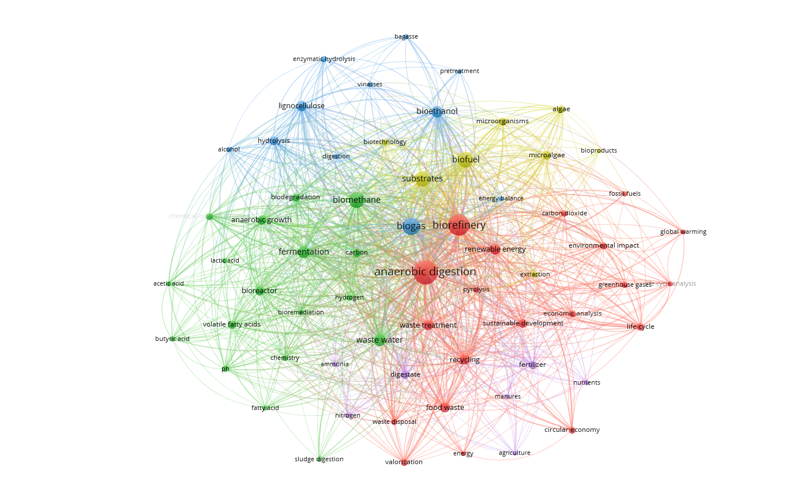
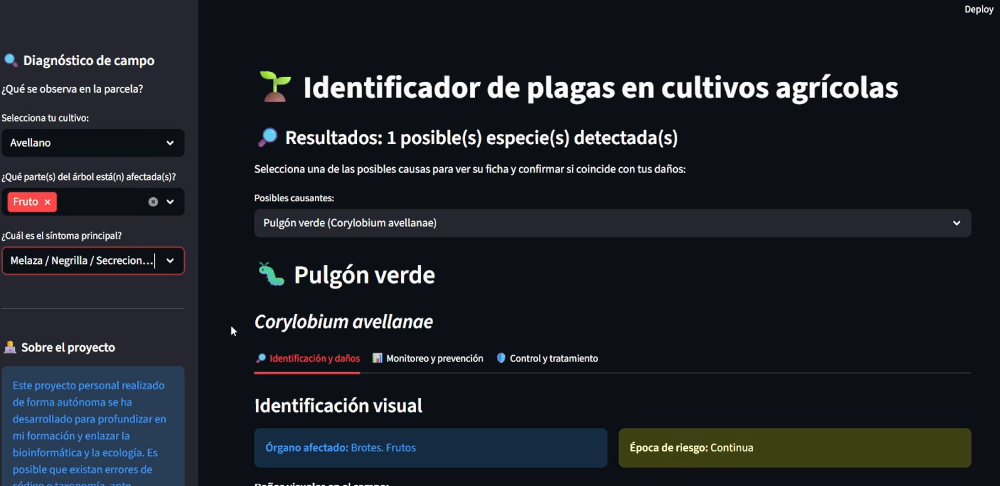
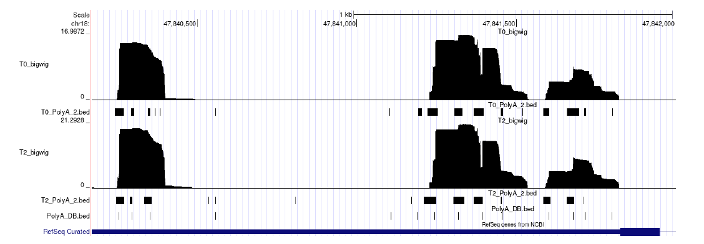
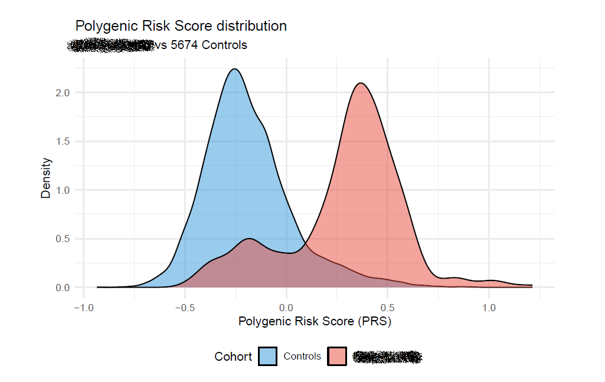

01 — Introduction
About
I am a biologist who found in computation the tools to ask questions at scales that bench work alone cannot reach. My trajectory has moved from ecology and science mapping to NGS pipelines and transcriptomic analysis, with applied work in environmental informatics and geospatial automation along the way. Outside the lab, a decade of theatre — acting, directing, writing — has shaped how I communicate ideas and collaborate across disciplines.
02 — Career
Research Experience
Oct 2025 — Feb 2026
Trainee Bioinformatician — Master's Thesis
CABIMER · Centro Andaluz de Biología Molecular y Medicina Regenerativa, Seville
Supervised by Cristina González Aguilera
Developed a computational pipeline for the characterisation of RNA isoforms from NGS data, focusing on the detection of alternative splicing events. The work spanned the full analysis cycle — from quality control and read alignment through to differential expression and publication-ready visualisation in R.
Oct — Nov 2025
Python Developer Intern
Biotfy · Remote
Supervised by Jesús Sancho Giaver & Víctor Galvín Coronil
Built a Python automation pipeline of over 1,000 lines to generate Environmental Impact Assessment reports, integrating live IoT sensor data, public government databases, and automated geospatial mapping. Containerised with Docker and exposed as a REST microservice via FastAPI.
Sep 2023 — Aug 2024
Undergraduate Researcher
Dept. of Plant Biology and Ecology · University of Seville
Supervised by Juan Manuel Mancilla Leyton
Led a bibliometric study mapping 30 years of scientific literature on anaerobic digestion by-products, processing 802 documents from Scopus. Identified emerging research clusters in biohydrogen, volatile fatty acids, and biorefineries — resulting in a first-author publication in Fermentation (MDPI, Q2).
03 — Output
Publications
Research Trends in the Recovery of By-Products from Organic Waste Treated by Anaerobic Digestion: A 30-Year Bibliometric Analysis
doi.org/10.3390/fermentation1009044604 — Work
Projects
IPM Pest Identifier
GitHubA diagnostic tool for the identification of crop pests and diseases, built on a structured relational database derived from Integrated Pest Management guides published by the Spanish Ministry of Agriculture. Designed to support farmers and agronomists in applying IPM principles without requiring specialist knowledge at every decision point.
Personal Portfolio
LiveA hand-coded academic portfolio built in pure HTML, CSS, and vanilla JavaScript — no frameworks, no templates. Designed from scratch to prioritise control and long-term maintainability over development convenience, with a scientific-editorial visual language.
05 — Technical
Skills
Programming & Data Science
Bioinformatics
Infrastructure & DevOps
Research Methods
Arts & Communication
Over ten years of active theatre — acting, directing, and scriptwriting — shaping an approach to communication that is direct, considered, and built for an audience.
Languages
06 — Background
Education
MSc in Bioinformatics and Biostatistics
Universitat Oberta de Catalunya (UOC)
BSc in Biology
University of Seville
International academic exchanges — Germany & Italy
Additional Training
07 — Gallery
Selected Work

Cluster analyzing the reseach trends in the recovery of by-products from organic waste treated by anaerobic digestion
VOSviewer co-occurrence analysis results following the analysis of 802 papers over a 30-year period.
Publication · Fermentation 2024
Output of the IMP that allows for the identification of pest species
The user can select the crop, symptoms, and other relevant factors to identify potential pest species.
Personal Project · GitHub
Title — to be filled in
Poly A sites identified in the dataset, aligned with reference PolyA Database. Viewed at UCSC Genome Browser.
Master's Thesis · CABIMER
Title — Research in progress
Density plot of the PRS in patients vs healthy controls. Paper in progress
In progress · Rstudio